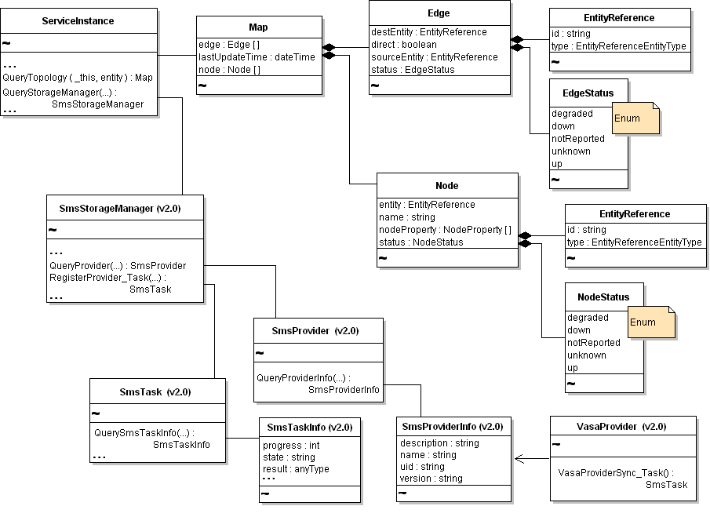

Welcome to the vSphere vCenter Storage Monitoring Service API Reference documentation. This API reference provides comprehensive information about all operations (methods) and data structures available through the vSphere vCenter Storage Monitoring Service API (SMS API).
The SMS API provides access to the Storage Monitoring Service (SMS) through a Java API.
SMS is a Web service that runs in conjunction with vCenter Server to provide information about storage.
Rather than using the vSphere API to obtain data for reports about storage consumption, for example,
you can use the SMS API to generate reports in just a few lines of code. The sample applications,
available in the SMS package, show you how. See the SMS SDK README file in the vSphere Management
SDK distribution (SDK/sms-sdk/SMS-SDK-README.html). The README file contains a list
of sample applications and it describes the requirements for setting up your development environment
to work with the SMS API.
The SMS API is exposed through the Web service that runs on vCenter Server systems. The API provides access to several query and synchronization operations, available from the SMS service interface (ServiceInstance).

The SMS API Reference is an HTML frameset. Click an entry in the left-hand pane to display information in the right-hand pane.
Click a category in the left-hand pane to display a summary list of data types or operations for that category. To quickly find documentation for a specific data type or operation, enter the name in the Quick Index field.